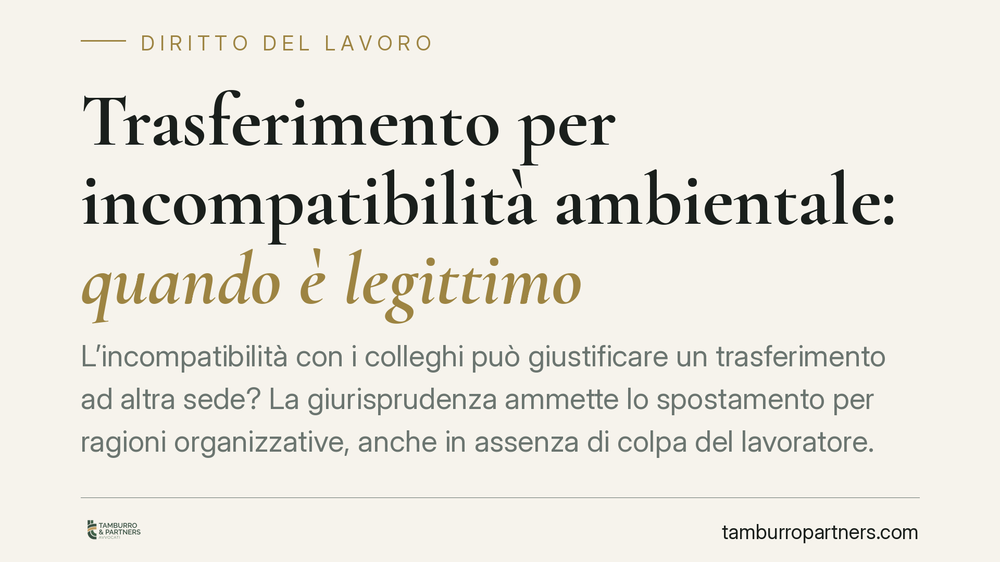

Trasferimento per incompatibilità ambientale: quando è legittimo
L'incompatibilità con i colleghi può giustificare un trasferimento ad altra sede? La giurisprudenza ammette lo spostamento per ragioni organizzative, anche in assenza di colpa del lavoratore. Si tratta però di una misura gestionale, non di una sanzione: l'azienda deve provare l'esigenza reale e il giudice conserva un margine di controllo. Vediamo presupposti, limiti e tutele concrete.

Il caso: tensioni tra colleghi e spostamento di sede
Un clima di conflitto persistente tra un dipendente e i suoi colleghi può rendere difficile il normale svolgimento dell'attività. In questi casi il datore di lavoro può decidere di trasferire il lavoratore a un'altra unità produttiva, invocando la cosiddetta incompatibilità ambientale.
La questione è delicata perché il trasferimento non ha natura punitiva: non serve a sanzionare un comportamento, ma a risolvere una disfunzione organizzativa. Proprio questa distinzione determina le regole applicabili e le tutele del lavoratore.
Inquadramento normativo
Il riferimento è l'art. 2103 del codice civile, nella formulazione introdotta dal D.Lgs. n. 81/2015. La norma consente il trasferimento del lavoratore da un'unità produttiva a un'altra solo in presenza di comprovate ragioni tecniche, organizzative e produttive.
L'espressione «comprovate» non è casuale: il datore deve essere in grado di dimostrare l'esistenza concreta di tali ragioni. Non basta un generico richiamo all'interesse aziendale.
Secondo l'orientamento consolidato della Corte di Cassazione, l'incompatibilità ambientale rientra tra le ragioni organizzative legittimanti il trasferimento, anche quando non sia possibile individuare un «colpevole» del conflitto. Ciò che rileva è l'effetto disfunzionale sull'organizzazione del lavoro, non l'attribuzione di responsabilità individuali.
Misura organizzativa, non sanzione disciplinare
È il punto centrale. Il trasferimento per incompatibilità ambientale è una misura gestionale: prescinde da una condotta illecita del dipendente e non richiede un procedimento disciplinare.
Le conseguenze pratiche sono rilevanti:
- Non serve la contestazione preventiva prevista per le sanzioni disciplinari (art. 7 dello Statuto dei lavoratori), perché non si contesta alcun illecito.
- Non è richiesta la colpa del lavoratore: il conflitto può derivare da incompatibilità caratteriali reciproche, senza un responsabile identificabile.
- Il trasferimento non va annotato come sanzione e non incide sul profilo disciplinare del dipendente.
Quando invece l'azienda intende punire un comportamento (ad esempio aggressioni verbali o atti di ostilità documentati), deve seguire la procedura disciplinare: in tal caso valgono altre regole e altre garanzie.
L'onere della prova e il trasferimento ritorsivo
L'onere della prova grava interamente sul datore di lavoro. È l'azienda a dover dimostrare che il trasferimento risponde a un'effettiva esigenza organizzativa, non a un intento di allontanamento o rappresaglia.
Il lavoratore che ritenga il provvedimento illegittimo può contestare la genuinità delle ragioni addotte. Particolare attenzione va al trasferimento ritorsivo o fraudolento: quando lo spostamento, pur formalmente motivato da esigenze organizzative, serve in realtà a colpire il dipendente (ad esempio per rappresaglia a una rivendicazione sindacale o a una denuncia), il provvedimento è nullo. In questo caso, tuttavia, è il lavoratore a dover provare il motivo illecito determinante.
Il margine di tutela del lavoratore
Il giudice non può sindacare le scelte imprenditoriali nel merito, ma esercita un controllo su tre profili:
- Effettività delle ragioni organizzative: il conflitto deve esistere davvero e incidere sul lavoro, non essere un pretesto.
- Nesso di causalità tra l'esigenza invocata e la decisione di trasferire proprio quel dipendente.
- Assenza di intento ritorsivo o fraudolento, che renderebbe nullo il provvedimento.
Se anche uno solo di questi requisiti manca, il trasferimento può essere dichiarato illegittimo, con diritto del lavoratore al rientro nella sede originaria e al risarcimento del danno.
Cosa fare in concreto
- Esaminate la lettera di trasferimento: verificate che indichi in modo specifico le ragioni organizzative e la sede di destinazione.
- Conservate la documentazione utile a ricostruire il contesto (comunicazioni interne, scambi di email, eventuali segnalazioni precedenti).
- Rispettate il termine di impugnazione: il trasferimento va contestato per iscritto entro 60 giorni dalla ricezione, con successivo deposito del ricorso o tentativo di conciliazione entro i termini di legge, pena la decadenza.
- Non rifiutate di prendere servizio senza una valutazione preliminare: è opportuno acquisire una valutazione professionale prima di opporsi, poiché l'inottemperanza ingiustificata può esporre a conseguenze disciplinari, fino al licenziamento.
- Valutate la sussistenza di un intento ritorsivo se il trasferimento segue a tempo una rivendicazione, una denuncia o un contrasto con la dirigenza.
---
*Contributo informativo a cura di Tamburro & Partners Avvocati – Avv. Giuseppe Tamburro. Non costituisce parere legale.*
Ogni storia di lavoro ha i suoi tempi.
Se gestisci HR e vuoi un confronto su contenzioso, ispezioni o licenziamenti, scrivi allo studio. Ti rispondiamo entro un giorno lavorativo.